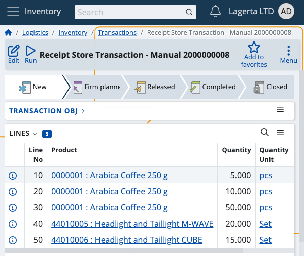

Receive
This section allows you to confirm product quantities received by your inventory or shop's store, and generate receipt store transactions.
Ordered quantities which are successfully confirmed and executed are counted towards your store's overall availability.
Prerequisites
Make sure you've set the correct document type for this operation within the Settings.
You'll then be prompted to select the released order for which you want to confirm received product quantities.
Available orders are filtered by enterprise company and location.

If you tap on one, you'll be taken to the Receive module.

Overview
Receieve is composed of three tabs:
- Ordered
- Executed
- Info
Ordered
This is where all of your ordered product quantities are listed, together with their lots and product lines, if present.
One and the same document can have its quantities spread across multiple lots.

Executed
Here, you can find how many quantities of the products are executed as opposed to being ordered.
For example, out of 30 ordered pcs, only 15 may be received. This will be reflected in the receipt store transaction.

Info
If you tap on a product from the Ordered tab, you'll be shown further information about it here.
This includes revealing its unique code, barcode and GTIN, if present, as well as how many instances of it will be executed.
If more lots are present, the ordered-executed ratio is distributed based on the FEFO (first expire - first out) principle.
For example, 250 product quantities may be distributed across 3 lots with 100, 80 and 70 each.
The lot with quantities whose date is closest to its expiration point will be prioritised in the execution process.
Scanning
In order to execute ordered quantities, you need to use the Scan field.
It lets you quickly insert the instances of a product you want to confirm as received either manually or through barcode commands.
For a list of available barcode templates, check out the Command list.
Individual scan
Simply type in a product's code once (e.g. "0000001") in order to execute only one pcs of it. Tap the blue arrow to confirm.
Every time you scan, you'll be taken to the Info tab for the respective product. Successfully executed pcs are painted in green.
If more lots are present for a product, the FEFO principle determines which lot has pcs received first.
Incorrect product codes will generate an error.
Multiple scans
To execute more pcs or the exact number of pcs for a product, specify it first (e.g. "50"), add a "*", and then provide the product ID.
This can be done on one line (e.g. 50*1001150), or on two separate lines for each input. Tap the blue arrow to confirm.
NOTE!
The trash bin button allows you to remove the latest execution, which will restore the previous Executed value.
Any one, two or three-number combination is automatically counted as a multiplier. You can insert it without adding "*" in the end.
You can remove inserted multipliers by tapping the Clear button (X).
The executed pcs of a product cannot be more than what is ordered.

Zero count
In case you've made a mistake and want to start the execution process from scratch, type in "0*" followed by the affected product code.
If the Executed bar is left with zero, this will be interpreted as the product having received "0 pcs" in the final receipt store document.

Generate a receipt order document
Once you're done scanning the ordered product quantities, you can go back to the Executed tab to see if you've made any mistakes.
The Ordered value will be positioned above the Executed one, making it easy to compare these values.

If all ordered product quantities have been received, the Finish button will be painted in green.
Tap on it once to generate your receipt store document.
This will take you to a separate space with direct access to the document template for this operation.

By tapping on it, you'll access the Inventory module from where you can release and complete the document.
